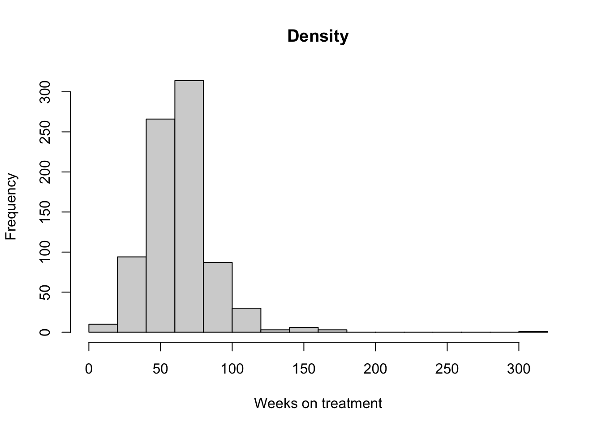
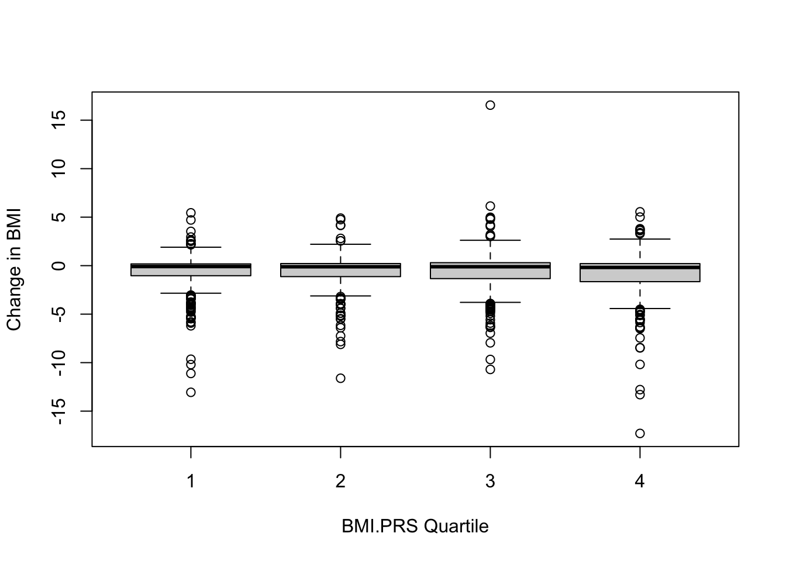

MoreSelective
2023-11-24
Last updated: 2023-11-28
Checks: 5 2
Knit directory: ~/multistate2/
This reproducible R Markdown analysis was created with workflowr (version 1.7.1). The Checks tab describes the reproducibility checks that were applied when the results were created. The Past versions tab lists the development history.
The R Markdown file has unstaged changes. To know which version of
the R Markdown file created these results, you’ll want to first commit
it to the Git repo. If you’re still working on the analysis, you can
ignore this warning. When you’re finished, you can run
wflow_publish to commit the R Markdown file and build the
HTML.
Great job! The global environment was empty. Objects defined in the global environment can affect the analysis in your R Markdown file in unknown ways. For reproduciblity it’s best to always run the code in an empty environment.
The command set.seed(20230211) was run prior to running
the code in the R Markdown file. Setting a seed ensures that any results
that rely on randomness, e.g. subsampling or permutations, are
reproducible.
Great job! Recording the operating system, R version, and package versions is critical for reproducibility.
Nice! There were no cached chunks for this analysis, so you can be confident that you successfully produced the results during this run.
Using absolute paths to the files within your workflowr project makes it difficult for you and others to run your code on a different machine. Change the absolute path(s) below to the suggested relative path(s) to make your code more reproducible.
| absolute | relative |
|---|---|
| ~/multistate2/code/utils.R | code/utils.R |
Great! You are using Git for version control. Tracking code development and connecting the code version to the results is critical for reproducibility.
The results in this page were generated with repository version f83cbb6. See the Past versions tab to see a history of the changes made to the R Markdown and HTML files.
Note that you need to be careful to ensure that all relevant files for
the analysis have been committed to Git prior to generating the results
(you can use wflow_publish or
wflow_git_commit). workflowr only checks the R Markdown
file, but you know if there are other scripts or data files that it
depends on. Below is the status of the Git repository when the results
were generated:
Ignored files:
Ignored: .DS_Store
Ignored: .Rproj.user/
Ignored: analysis/.DS_Store
Ignored: code/.DS_Store
Ignored: data/
Ignored: lesliepics/.DS_Store
Ignored: output/
Ignored: plots/.DS_Store
Untracked files:
Untracked: klashier.Rmd
Untracked: klashier_files/
Unstaged changes:
Modified: analysis/glp1_matching_lastdatebeforescript.Rmd
Modified: analysis/glp1moreseelctive.Rmd
Modified: analysis/paris.Rmd
Note that any generated files, e.g. HTML, png, CSS, etc., are not included in this status report because it is ok for generated content to have uncommitted changes.
These are the previous versions of the repository in which changes were
made to the R Markdown (analysis/glp1moreseelctive.Rmd) and
HTML (docs/glp1moreseelctive.html) files. If you’ve
configured a remote Git repository (see ?wflow_git_remote),
click on the hyperlinks in the table below to view the files as they
were in that past version.
| File | Version | Author | Date | Message |
|---|---|---|---|---|
| Rmd | f83cbb6 | Sarah Urbut | 2023-11-24 | Update |
| html | f83cbb6 | Sarah Urbut | 2023-11-24 | Update |
let’s be more selective and select first and last script date
- Here we grab the first script date and the last script date for treated individuals
source("~/multistate2/code/utils.R")
library(MatchIt)
prs_subset=readRDS("~/Library/CloudStorage/Dropbox-Personal/pheno_dir/prs_subset.rds")
#glp1=fread("~/Library/CloudStorage/Dropbox-Personal//glp1s.txt")
df_baseline=readRDS("~/Library/CloudStorage/Dropbox-Personal/pheno_dir/output/dfukb_baseline.rds")
glp1=fread("~/Library/CloudStorage/Dropbox-Personal//glp1s_withi.txt")
colnames(glp1)[1]=c("Identifier")
colnames(glp1)[3]=c("event_dt")
glp1$event_dt <- as.Date(glp1$event_dt, format="%d/%m/%Y")
biomarkers=readRDS("~/Library/CloudStorage/Dropbox-Personal/ukbb-ehr-data/data/biomarkers.rds")
bmi=biomarkers[biomarkers$variable%in%"bmi",]
bmi$date <- as.Date(bmi$date, format="%Y/%m/%d")
patient_med_data <- glp1 %>%
group_by(Identifier) %>%
summarize(first_script_date = min(event_dt),last_script_date = max(event_dt))
colnames(patient_med_data)=c("eid","first_script_date","last_script_date")
patient_med_data$first_script_date <- as.Date(patient_med_data$first_script_date, format = "%Y-%m-%d")
patient_med_data$last_script_date <- as.Date(patient_med_data$last_script_date, format = "%Y-%m-%d")Treated Folks
- We grab the first BMI as the median BMI that is within 1 year of the first script date
- We grab the post-treat BMI as the median BMI that is within 12 weeks after 1st script to 1 year after last.
- We tried the last measurement before but it is noisy to use the final measurement only, we can also see how many measurements folks had
patient_bmi_data=bmi[bmi$eid%in%patient_med_data$eid,c("eid","date","value")]
bbmi=df_baseline[,c("identifier","f.53.0.0","f.21001.0.0")]
bbmi$f.53.0.0=as.Date(bbmi$f.53.0.0)
patient_bmi_data=rbind(patient_bmi_data,bbmi[,c("identifier","f.53.0.0","f.21001.0.0")],use.names=FALSE)
patient_bmi_data$date <- as.Date(patient_bmi_data$date, format = "%Y-%m-%d")
merged_data <- merge(patient_bmi_data, patient_med_data, by = "eid")
bmi_before_script <- merged_data %>%
filter(date < first_script_date & date > (first_script_date - years(1)))%>%
group_by(eid) %>%
summarise("beforedate"=min(date),"medbmi"=median(value),"number"=length(value))
summary(bmi_before_script$number) Min. 1st Qu. Median Mean 3rd Qu. Max.
1.000 1.000 2.000 2.688 3.000 11.000 bmi_after_script <- merged_data %>%
filter(date > first_script_date + weeks(12) & date < last_script_date + years(1)) %>%
group_by(eid) %>%
summarise("afterdate"=min(date),"medbmi"=median(value),"number"=length(value))
summary(bmi_after_script$number) Min. 1st Qu. Median Mean 3rd Qu. Max.
1.000 3.000 5.000 6.663 9.000 64.000 Now we merge the first and last BMI measurements with the script data and perform checks
- to make sure first measure is before drug start
- check to make sure last BMI measure is at least 12 weeks after drug start
final_data <- (bmi_before_script[,c("eid","beforedate","medbmi")]) %>%
left_join(patient_med_data[,c("eid","first_script_date","last_script_date")], by = "eid") %>%
left_join(bmi_after_script[,c("eid","afterdate","medbmi")], by = "eid")
colnames(final_data)=c("eid","pretreat_measure_date","pretreat_bmi","first_script_date","last_script_date","post_drug_measure_date","post_drug_bmi")
final_data=na.omit(final_data)
summary(year(final_data$pretreat_measure_date)) Min. 1st Qu. Median Mean 3rd Qu. Max.
2006 2010 2011 2011 2013 2016 summary(year(final_data$post_drug_measure_date)) Min. 1st Qu. Median Mean 3rd Qu. Max.
2007 2011 2013 2013 2014 2017 # check to make sure first measure is before drug start
sum(difftime(final_data$first_script_date,final_data$pretreat_measure_date)<0)[1] 0# check to make sure last BMI measure is at least 12 weeks after drug start
sum(difftime(final_data$post_drug_measure_date,final_data$first_script_date,units = "days")<83)[1] 0## controlsLess clearcut for controls # we will choose controls to mirror our selection above * First BMI median between the treated populations pretreat measure dates (min,max pre_treat_date) * Last BMI median between the treated populations post-treat measure dates
controls=bmi[!bmi$eid%in%patient_med_data$eid,]
## since there is no med, grab first and last measruement
## find measruements around the time of treated
bmi_controls_first <- controls %>%
filter(date >= min((final_data$pretreat_measure_date)) & date < max((final_data$pretreat_measure_date))) %>%
group_by(eid) %>%
summarise("beforedate"=min(date),"meanbmi"=mean(value),"number"=length(value))
summary(bmi_controls_first$beforedate) Min. 1st Qu. Median Mean 3rd Qu. Max.
"2006-12-14" "2007-10-11" "2008-05-07" "2008-07-03" "2009-03-25" "2016-04-25" summary(bmi_controls_first$number) Min. 1st Qu. Median Mean 3rd Qu. Max.
1.00 2.00 4.00 5.36 7.00 215.00 bmi_controls_last <- controls %>%
filter(date >= min(final_data$post_drug_measure_date) & date < max(final_data$post_drug_measure_date)) %>%
group_by(eid) %>%
summarise("afterdate"=min(date),"meanbmi"=mean(value),"number"=length(value))
summary(bmi_controls_last$afterdate) Min. 1st Qu. Median Mean 3rd Qu. Max.
"2007-11-29" "2008-04-07" "2008-10-04" "2008-12-23" "2009-07-02" "2017-05-10" summary(bmi_controls_last$number) Min. 1st Qu. Median Mean 3rd Qu. Max.
1.000 2.000 4.000 5.176 7.000 197.000 final_data_controls=
inner_join(bmi_controls_first[,c("eid","beforedate","meanbmi")], bmi_controls_last[,c("eid","afterdate","meanbmi")],by = "eid", suffix = c("_before", "_after"))
# remote those in which dates are the same
final_data_controls=final_data_controls[final_data_controls$beforedate!=final_data_controls$afterdate,]Again, checks:
# check to make sure last BMI measure is at least 12 weeks after drug start
sum(difftime(final_data_controls$afterdate,final_data_controls$beforedate,units = "days")>0)[1] 67037sum(difftime(final_data_controls$afterdate,final_data_controls$beforedate,units = "days")==0)[1] 0## controls
summary(year(final_data_controls$beforedate)) Min. 1st Qu. Median Mean 3rd Qu. Max.
2006 2007 2007 2007 2007 2007 summary(year(final_data_controls$afterdate)) Min. 1st Qu. Median Mean 3rd Qu. Max.
2007 2008 2008 2009 2009 2017 final_data$treat=1
final_data_controls$treat=0
treat=final_data[,c("eid","pretreat_bmi","post_drug_bmi","pretreat_measure_date","post_drug_measure_date","treat")]
untreat=final_data_controls[,c("eid","meanbmi_before","meanbmi_after","beforedate","afterdate","treat")]
names(untreat)=names(treat)
all_data=rbind(treat,untreat)
all_data$time_diff=difftime(all_data$post_drug_measure_date,all_data$pretreat_measure_date,units = "days")
df=merge(all_data,df_baseline[,c("identifier","f.34.0.0","f.31.0.0")],by.x="eid",by.y="identifier")
df_with_prs=merge(df,prs_subset[,c("Identifier","BMI")],by.x="eid",by.y="Identifier")now we perform matching on
- duration between measurements
- patient birthday
- sex
- pretreat BMI
## now match on pretreat bmi
matcher=matchit(treat~pretreat_bmi+f.34.0.0+f.31.0.0+time_diff,data = df_with_prs)
summary(matcher)
Call:
matchit(formula = treat ~ pretreat_bmi + f.34.0.0 + f.31.0.0 +
time_diff, data = df_with_prs)
Summary of Balance for All Data:
Means Treated Means Control Std. Mean Diff. Var. Ratio eCDF Mean
distance 0.0642 0.0117 0.5367 11.8559 0.3747
pretreat_bmi 36.6083 27.9802 1.4112 1.4463 0.3747
f.34.0.0 1951.1953 1950.1495 0.1451 0.8341 0.0378
f.31.0.00 0.4373 0.5466 -0.2203 . 0.1093
f.31.0.01 0.5627 0.4534 0.2203 . 0.1093
time_diff 445.0602 569.9927 -0.7693 0.1094 0.0548
eCDF Max
distance 0.6091
pretreat_bmi 0.6206
f.34.0.0 0.1073
f.31.0.00 0.1093
f.31.0.01 0.1093
time_diff 0.1901
Summary of Balance for Matched Data:
Means Treated Means Control Std. Mean Diff. Var. Ratio eCDF Mean
distance 0.0642 0.0642 0.0003 1.0010 0.0000
pretreat_bmi 36.6083 36.5190 0.0146 0.8744 0.0140
f.34.0.0 1951.1953 1950.9042 0.0404 0.8864 0.0189
f.31.0.00 0.4373 0.4177 0.0396 . 0.0197
f.31.0.01 0.5627 0.5823 -0.0396 . 0.0197
time_diff 445.0602 431.7138 0.0822 0.3019 0.0299
eCDF Max Std. Pair Dist.
distance 0.0049 0.0014
pretreat_bmi 0.0430 0.3166
f.34.0.0 0.0553 1.1836
f.31.0.00 0.0197 0.9510
f.31.0.01 0.0197 0.9510
time_diff 0.2174 1.4472
Sample Sizes:
Control Treated
All 65263 814
Matched 814 814
Unmatched 64449 0
Discarded 0 0#extract matched data
match_dat=match.data(matcher)
match_dat$bmi.prs=match_dat$BMI
match_dat$delta=match_dat$post_drug_bmi-match_dat$pretreat_bmi
summary(lm(delta~treat+treat:bmi.prs,match_dat))
Call:
lm(formula = delta ~ treat + treat:bmi.prs, data = match_dat)
Residuals:
Min 1Q Median 3Q Max
-15.6613 -0.4422 0.0066 0.6225 17.9356
Coefficients:
Estimate Std. Error t value Pr(>|t|)
(Intercept) 0.06136 0.06568 0.934 0.3503
treat -1.34918 0.10073 -13.393 <2e-16 ***
treat:bmi.prs -0.17285 0.06922 -2.497 0.0126 *
---
Signif. codes: 0 '***' 0.001 '**' 0.01 '*' 0.05 '.' 0.1 ' ' 1
Residual standard error: 1.874 on 1625 degrees of freedom
Multiple R-squared: 0.1328, Adjusted R-squared: 0.1317
F-statistic: 124.4 on 2 and 1625 DF, p-value: < 2.2e-16We examine distribution of delta by treatment and BMI
boxplot(delta~treat,data = match_dat,ylab="Change in BMI")
hist(as.numeric(match_dat$time_diff[match_dat$treat==1]/7),xlab="Weeks on treatment",main="Density")
match_dat$prs.group=cut(match_dat$bmi.prs,breaks = quantile(match_dat$bmi.prs,probs = seq(0,1,by=0.25)),labels = c(1:4))
boxplot(delta~prs.group,data = match_dat,ylab="Change in BMI",xlab="BMI.PRS Quartile")
sessionInfo()R version 4.3.1 (2023-06-16)
Platform: aarch64-apple-darwin20 (64-bit)
Running under: macOS Sonoma 14.0
Matrix products: default
BLAS: /Library/Frameworks/R.framework/Versions/4.3-arm64/Resources/lib/libRblas.0.dylib
LAPACK: /Library/Frameworks/R.framework/Versions/4.3-arm64/Resources/lib/libRlapack.dylib; LAPACK version 3.11.0
locale:
[1] en_US.UTF-8/en_US.UTF-8/en_US.UTF-8/C/en_US.UTF-8/en_US.UTF-8
time zone: America/Chicago
tzcode source: internal
attached base packages:
[1] stats graphics grDevices utils datasets methods base
other attached packages:
[1] MatchIt_4.5.5 babynames_1.0.1 gapminder_1.0.0 carData_3.0-5
[5] plotly_4.10.3 DT_0.30 gt_0.10.0 RColorBrewer_1.1-3
[9] data.table_1.14.8 pROC_1.18.5 rsq_2.6 survMisc_0.5.6
[13] gridExtra_2.3 ggfortify_0.4.16 reshape_0.8.9 eulerr_7.0.0
[17] survminer_0.4.9 ggpubr_0.6.0 survival_3.5-7 lubridate_1.9.3
[21] forcats_1.0.0 stringr_1.5.1 purrr_1.0.2 readr_2.1.4
[25] tidyr_1.3.0 tibble_3.2.1 ggplot2_3.4.4 tidyverse_2.0.0
[29] dplyr_1.1.4 ggsci_3.0.0
loaded via a namespace (and not attached):
[1] rlang_1.1.2 magrittr_2.0.3 git2r_0.32.0 deming_1.4
[5] compiler_4.3.1 vctrs_0.6.4 pkgconfig_2.0.3 fastmap_1.1.1
[9] backports_1.4.1 KMsurv_0.1-5 utf8_1.2.4 promises_1.2.1
[13] rmarkdown_2.25 tzdb_0.4.0 nloptr_2.0.3 bit_4.0.5
[17] xfun_0.41 cachem_1.0.8 jsonlite_1.8.7 highr_0.10
[21] later_1.3.1 chk_0.9.1 Deriv_4.1.3 broom_1.0.5
[25] R6_2.5.1 bslib_0.6.0 stringi_1.8.2 car_3.1-2
[29] boot_1.3-28.1 jquerylib_0.1.4 Rcpp_1.0.11 knitr_1.45
[33] zoo_1.8-12 httpuv_1.6.12 Matrix_1.6-3 splines_4.3.1
[37] timechange_0.2.0 tidyselect_1.2.0 rstudioapi_0.15.0 abind_1.4-5
[41] yaml_2.3.7 lattice_0.22-5 plyr_1.8.9 withr_2.5.2
[45] evaluate_0.23 xml2_1.3.5 pillar_1.9.0 whisker_0.4.1
[49] generics_0.1.3 rprojroot_2.0.4 hms_1.1.3 munsell_0.5.0
[53] scales_1.2.1 minqa_1.2.6 xtable_1.8-4 glue_1.6.2
[57] lazyeval_0.2.2 tools_4.3.1 lme4_1.1-35.1 ggsignif_0.6.4
[61] fs_1.6.3 grid_4.3.1 colorspace_2.1-0 nlme_3.1-163
[65] cli_3.6.1 km.ci_0.5-6 workflowr_1.7.1 fansi_1.0.5
[69] viridisLite_0.4.2 gtable_0.3.4 rstatix_0.7.2 sass_0.4.7
[73] digest_0.6.33 htmlwidgets_1.6.3 htmltools_0.5.7 lifecycle_1.0.4
[77] httr_1.4.7 bit64_4.0.5 MASS_7.3-60